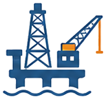

Research
Country analysis, petroleum governance, and fiscal frameworks.
Compare upstream systems, state roles, legal structures, and fiscal mechanics across the region with a disciplined editorial baseline.
West African Petroleum Intelligence
Upstream Atlas begins with a rigorous upstream reference base: the book Exploration and Exploitation of Petroleum Resources in West Africa, then extends that foundation into country analysis, monitoring workflows, and future AI-assisted petroleum intelligence.
Platform Intelligence
The current surface delivers a structured reference base. The next step is to turn that editorial foundation into country intelligence, monitoring, and decision support without obscuring what is available today.
Research
Compare upstream systems, state roles, legal structures, and fiscal mechanics across the region with a disciplined editorial baseline.

In buildIndustry Monitoring
Move beyond static reading into a platform surface that can organise upstream events, campaigns, and commercial signals in one place.
Intelligence
The homepage now establishes room for premium intelligence workflows without overstating capabilities that are still on the roadmap.
Editorial Foundation
Upstream Atlas is built on the book Exploration and Exploitation of Petroleum Resources in West Africa, then reframed as a web-first intelligence surface. The book establishes the source credibility; the platform organises that material into a stronger operating layer for petroleum, fiscal, and governance analysis.
The current reference base already includes the hydrocarbon value chain, upstream phases, state roles, fiscal regimes, governance determinants, and country-specific analysis. Those assets now become the foundation for richer country and monitoring products.
Chapter 1
Upstream, midstream, and downstream roles framed for regional analysis.
Chapter 4
Tax, royalty, cost recovery, and state participation concepts ready for platform use.
Chapter 6
Country-specific petroleum context that can anchor future market briefs.
Country Intelligence
The country layer is structured to grow into production, exploration, fiscal, and regulatory intelligence. The cards below are roadmap previews for the operating template, not a claim that all signals are already populated.
Established producer
Core marketProduction scale, acreage movement, fiscal architecture, and regulatory direction.
Atlantic basin
Offshore focusOffshore development pace, governance posture, and comparative fiscal signals.
Mature upstream
Deepwater scaleDeepwater operating context, state participation, and asset development pressure.
Emerging producer
New LNG cycleNew-project momentum, fiscal structure, and regulatory architecture around first-wave output.
Additional markets
Roadmap markets keep the same intelligence model, with lighter previews until country briefs are populated.
Gas frontier
Cross-borderCross-border development context, gas-led strategy, and state positioning in shared projects.
High-growth watchlist
Frontier watchExploration momentum, commercial uncertainty, and emerging regulatory focus around a frontier basin.
Competitive acreage
Licensing watchLicensing activity, fiscal terms, and offshore commercial developments in a competitive basin.
Legacy producer
Brownfield resetMature production, state participation, and long-cycle operating context across legacy assets.
Who Uses It
A structured base for comparing petroleum governance, upstream phases, fiscal systems, and country-specific operating context.
A clearer way to navigate licensing, taxation, state participation, and institutional capability across West African markets.
A high-context reference for commercial positioning, upstream decision support, and regional market understanding.
Resources
The current public resource layer remains the mdBook edition and chapter library, organised to support research, teaching, and market orientation.
Upstream, midstream, and downstream roles in a regional development strategy.
Licensing, exploration oversight, production planning, and abandonment obligations.
Royalties, cost recovery, profit oil, taxation, and state participation.
Political stability, transparency, corruption risk, and institutional capacity.
Chapter Preview
Part I: Foundations
Part II: Fiscal Systems
Part III: Governance & Analysis
Publication Note
This edition is maintained by Edison as a professional web presentation of the edited manuscript. The current release focuses on structured reading, stronger navigation, and a homepage that better reflects the intended market position of Upstream Atlas.